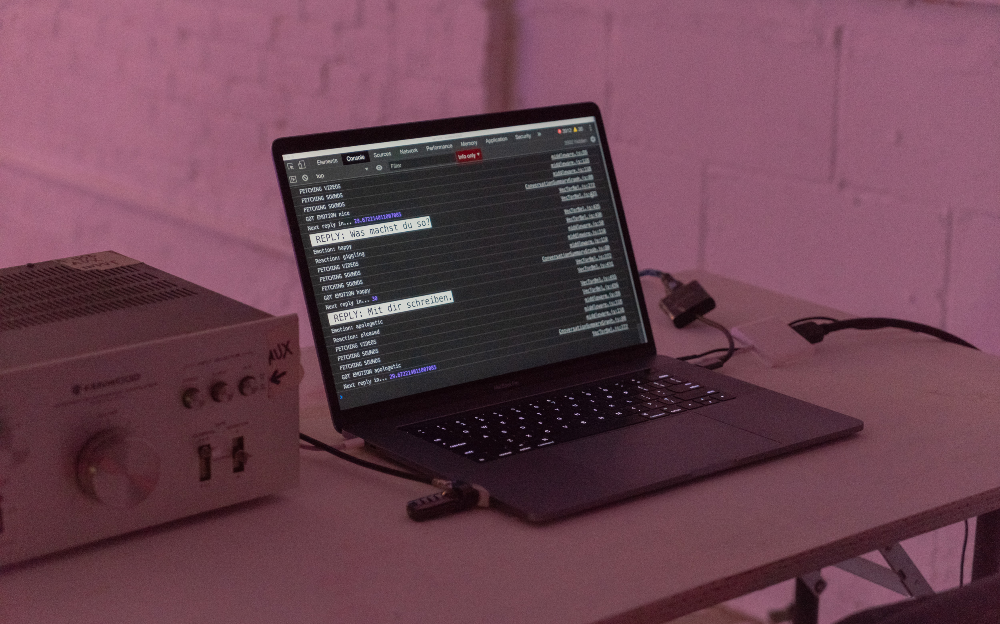

November 10 - December 22, 2018
False Flag is proud to present Vec Tor Bel from NonCoreProjector—a collective formed by Rollo Carpenter, Jack Colton, Elias Jarzombek, and John O’Connor.
Projected onto the gallery’s main wall is a continually-evolving series of translucent videos, overlaid with dynamic colored graphs. The visual content is produced by Cleverbot, a chatbot developed by Rollo Carpenter, driven by an artificial intelligence algorithm. Each day initiates a new conversation: Cleverbot pulls a headline from the morning’s news, searches that phrase on YouTube, plays the resulting video, and reads aloud the first comment - which becomes the initial node on a projected graph. Cleverbot responds to this initial comment, then uses the response for a subsequent search, repeating this cycle through the end of the day.
The average color of each video is distilled into a transparent filter, creating a haze of colored fields. While the videos are largely silent, their same originating phrases are also searched for on a found-sound database; the results are correlatively diffused, stretched, and compressed into the soundtrack. The emotional intensity of the language dictates the substance, pace and movements of the projection: Cleverbot’s AI algorithm analayzes then charts the emotional content of the scanned commentary through color, line type, and direction. Each day, O’Connor will use the initial news headline and Cleverbot’s final comment as the inspiration for a stylistically-diverse series of drawings: paranthetically documenting the flow and direction of the day's conversation.
NonCoreProjector conceives of this new piece as “a series of interruptions”: with each interaction, there is a re-direction or derailment, evoking increasingly-familiar cultural and political interruptions. Bringing together found footage, algorithmically-induced uncertainty, and appropriated human commentary, Vec Tor Bel portrays two ‘intelligences’ attempting to make sense of both one another and the world at large. In ways both fascinating and terrifying, the slippages that perpetually dislodge any emergent logic send us down a Dada-ist rabbit hole.
While there are parameters within which Vec Tor Bel operates, the collective forfeits a significant degree of agency, yielding unpredictable results. In the spirit of Bruce Conner, John Cage, and Yoko Ono, the moment-to-moment outcome cannot be anticipated. At once eerily humanistic and undeniably technological, Vec Tor Bel advances NonCoreProject’s investigation of the uncanny entities that hold growing sway over our lives - from the causes we embrace to the partners we choose.
